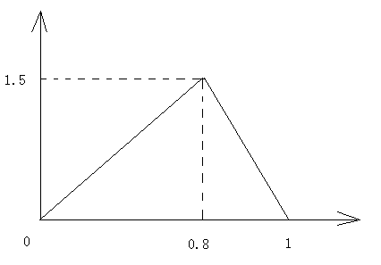

Android 电视关闭的动画效果(姜饼版本的特效)
大家都看过老式电视机关闭的时候画面一闪消失的那个效果吧~
觉得那个不错~就试着做一个~
先看效果图~


首先创建一个TVOffAnimation继承于Animation，这个类是专门做动画效果的~不用多说了吧~
然后在initialize里面设置一些参数
public void initialize(int width, int height, int parentWidth, int parentHeight) { super.initialize(width, height, parentWidth, parentHeight);
setDuration(500);
setFillAfter(true);
//保存View的中心点
halfWidth = width / 2;
halfHeight = height / 2;
setInterpolator(new AccelerateDecelerateInterpolator());
}
其中setInterpolator(new AccelerateDecelerateInterpolator())选择一个先加速后减速的效果
最后动画的部分里面
protected void applyTransformation(float interpolatedTime, Transformation t) { final Matrix matrix = t.getMatrix();
if (interpolatedTime < 0.8) {
matrix.preScale(1+0.625f*interpolatedTime, 1-interpolatedTime/0.8f+0.01f,halfWidth,halfHeight);
}else{
matrix.preScale(7.5f*(1-interpolatedTime),0.01f,halfWidth,halfHeight);
}
}
interpolatedTime表示的是当前动画的间隔时间 范围是0-1
那么横向来讲前80%的时间我们要横向拉伸到150%，纵向是直接减小，最后只留一条线。
后20%的时间里我们要横向从150%压缩至0%，纵向保持不变就好了，当横向为0的时候就全部消失了。
可能大家对于1+0.625f*interpolatedTime, 1-interpolatedTime/0.8f+0.01f，7.5f*(1-interpolatedTime),0.01f 这4个值比较疑惑，其实很简单，这是一个一次函数的函数值
如图为sx的变化曲线
